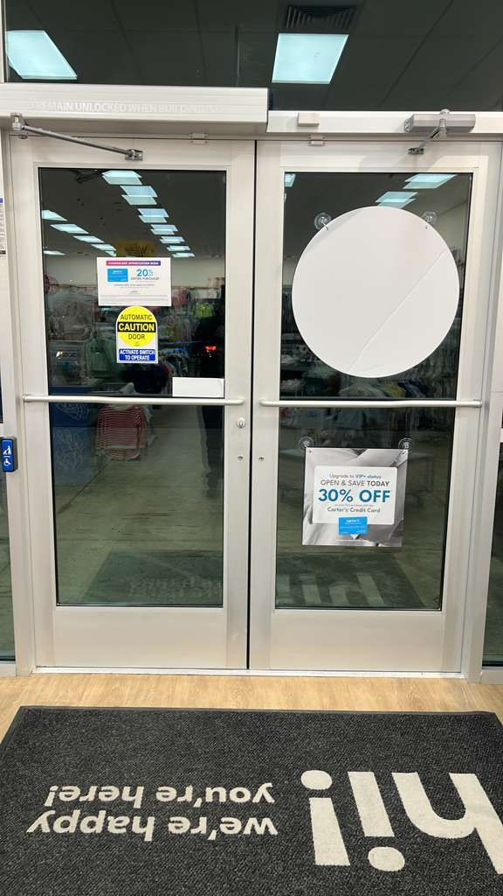
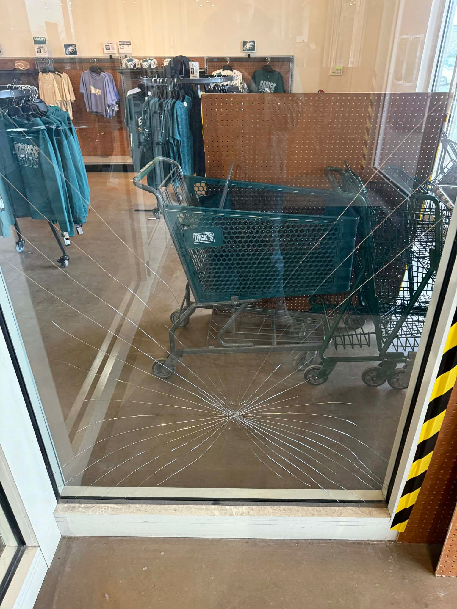
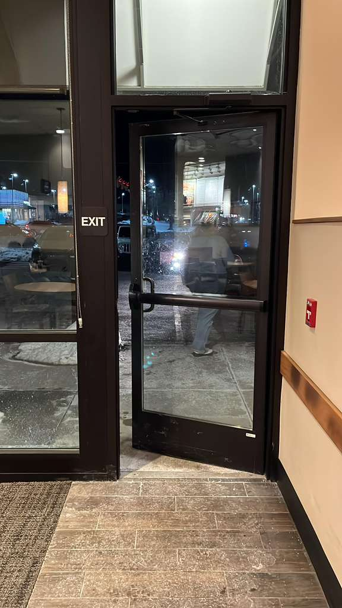
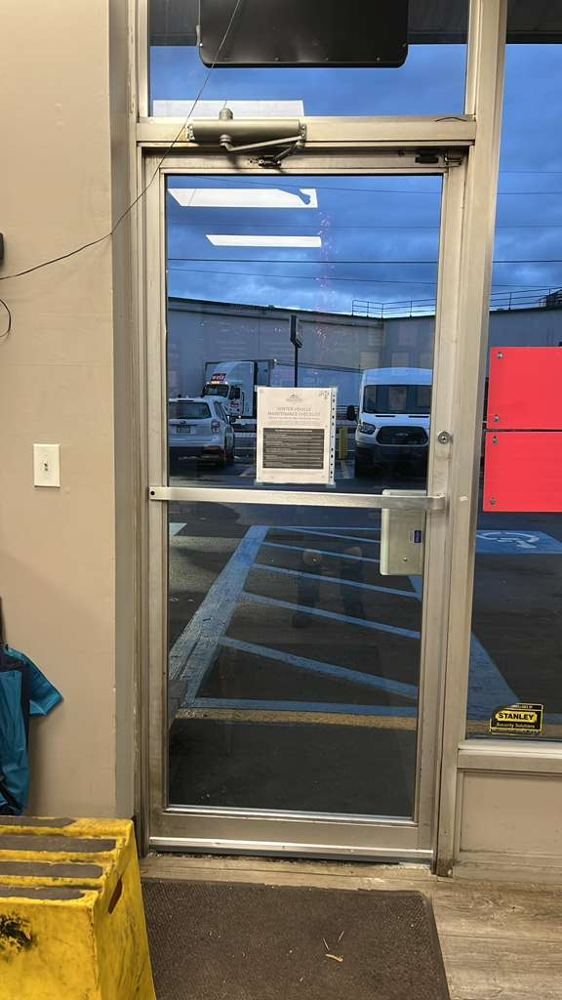
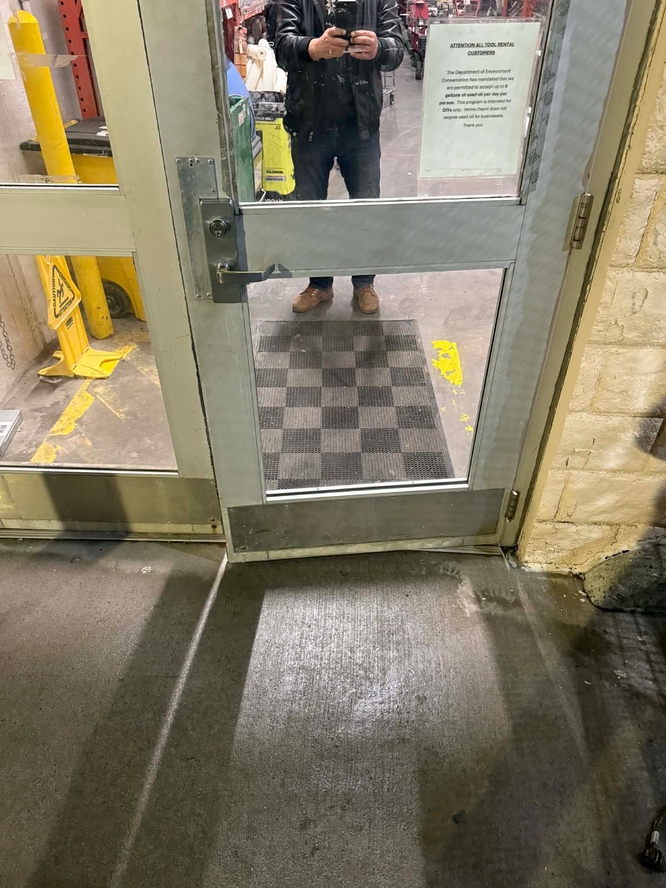
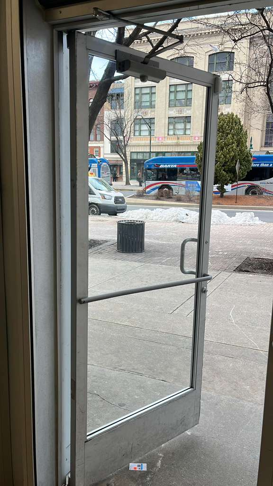
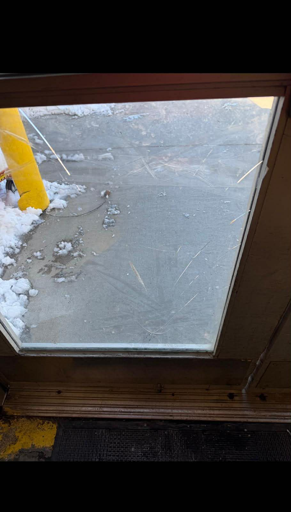
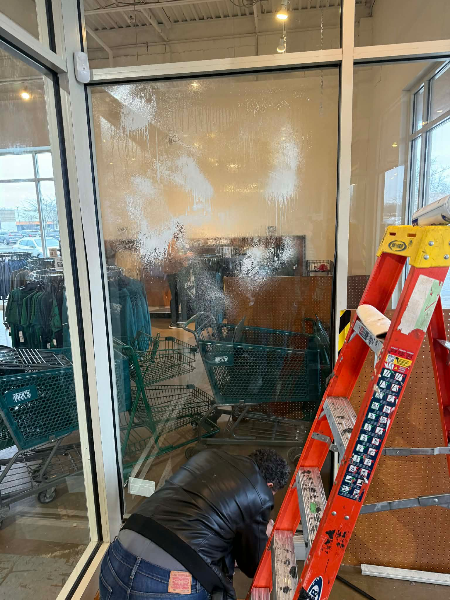

Commercial Glass Services (Overview)
For property managers: quoting, scheduling, and standardizing storefront and commercial glass work across multiple locations.
Commercial overview →A clear service menu for homeowners, businesses, and property managers across DC, Northern VA, and Maryland (including Baltimore). Each core service has a dedicated page so you can find the right solution fast.
From emergency calls to scheduled upgrades, we handle urgent security issues and high-visibility repairs. Explore the dedicated service pages below.
For property managers: quoting, scheduling, and standardizing storefront and commercial glass work across multiple locations.
Commercial overview →Secure broken glass openings fast and coordinate replacement to restore operations.
Board-up & emergency →Lockouts, lock changes, rekeys, and door lock repairs for residential & commercial customers—24/7 for urgent calls.
Locksmith services →Replacement and upgrades for tempered/laminated storefront systems, including emergency board-up coordination.
Storefront glass →Panic hardware, closers, pivots, hinges, and commercial aluminum glass doors—diagnosed and repaired for daily use.
Door hardware →Residential and commercial door repair: alignment, closers, hinges, latches, and lock-related door issues.
Door repair →Repair, replacement, and installation for frameless and semi-frameless shower doors. Clean work and proper fit.
Shower doors →Interior commercial glass for offices and tenant improvements: conference rooms, lobbies, and partition systems.
Partitions →


These service pages cover common commercial situations like broken door glass, foggy double-pane units, storefront framing issues, and exterior building glass. If you’re not sure which service applies, call 703-244-0559 or 202-643-4062 and we’ll point you to the right solution.
Replacement for tempered storefront glass panels, door lites, sidelites, and transoms (commercial only).
Tempered glass replacement →Commercial aluminum glass door repair: alignment, pivots, closers, latches, and door glass replacement.
Commercial glass door repair →Replace foggy or failed double-pane units in commercial windows and storefront systems.
IGU replacement →Aluminum storefront system support: framing issues, movement, leaks, and repairs before new glass install.
Storefront framing repair →Commercial building glass support for broken panels and glazing coordination for curtain wall systems.
Curtain wall glass repair →Photos organized by service type. These are examples of commercial work only.















Typical customers include:
For emergencies, call 703-244-0559. For scheduled work, call the same number—texts and photos are welcome. If possible, share (1) the address, (2) a few photos, and (3) what’s not working (won’t lock, won’t close, broken glass, etc.).